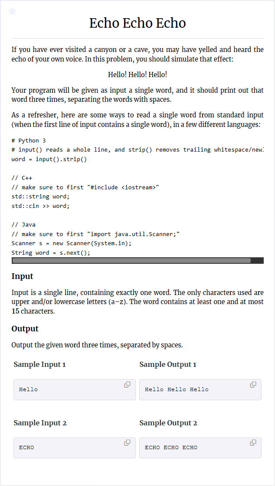
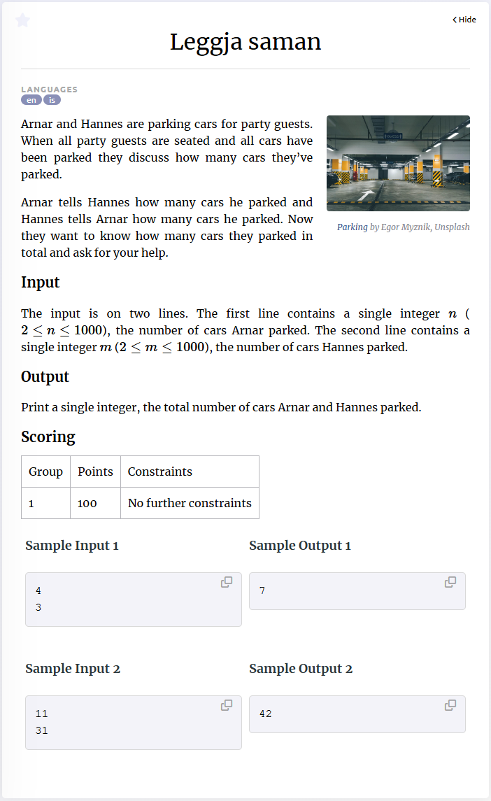

Input-Output Essentials
How to interact with Kattis

Reading first input
Typically, a kattis problem has at least one line of input.
You process the input line by line.
Each call to the
input()-function
retrieves one line of input,
which you can store in a variable.
This variable is always of the type
string,
and you might need further processing to get the input into a usable shape
(see below).
In the example
Echo Echo Echo problem,
we have only one line of input and
we do not need further processing.
We can therefore proceed as follows:
# Store one line of input in the variable word.
word = input()
When testing your program, for each call to the
input()-function
you have to enter one line of text into the console/terminal
where your program is run.
Writing output
Kattis regards anything written to standard output
(appearing in the console/terminal)
as part of the output of your program.
In python,
you can write to standard output by using the
print()-function.
The following code shows two ways of solving Echo Echo Echo
using two different ways of invoking
print().
# Repeat the word three times with a blank in between.
# Use the strip()-method to remove the last blank symbol.
result = ((word + ' ')*3).strip()
print(result)
# Another solution
print(word, word, word)
Important!
A common beginner's mistake is to write a message when asking for input,
e.g.,
when part of the input is someone's age, writing
input('What is your age?').
In this case, the message
'What is your age?'
will be written to standard output, and therefore,
kattis will consider it to be part of the
output of your program.
Therefore, even if your program outputs the correct answer
in the end, kattis will reject your submission due to
the additional unexpected message.
Practice problems: Hello World! Velkomin!
Processing input
input()-function
twice, once for each line.
After that, the two numbers will be stored as strings,
and we have to convert them to integers
before we can proceed.
This is done using the
int()-function,
passing the string representing a number as an argument.
a = input()
b = input()
a = int(a)
b = int(b)
# Alternative
a = int(input())
b = int(input())
If the number was not an integer but a floating point number,
you can use the
float()-function
analogously.
.split()
Another common type of input is to have several
items (words, integers, ...) separated by a space and
written on a single line,
and you have to be able to access each item on the line separately.
See for instance the
Add Two Numbers
problem.
In python, you can use the
split()-method on a string
splits a string into separate ``words''; it makes a new word whenever at least one
space-symbol is encountered in the string.
If you know how many words the string will contain,
which is often the case in kattis problems,
you can assign each word to a separate variable directly:
>>> x = 'hello 47 bye'
>>> a, b, c = x.split()
>>> print(a)
hello
>>> print(b)
47
>>> print(c)
bye
If a line of input contains a fixed number of integers or floats, you can use the following shortcuts.
# Reading three integers
a, b, c = map(int, input().split())
# Reading four floats
a, b, c, d = map(float, input().split())
Space-separated sequences (of numbers).
If you do not know in advance how many words there are,
then you can store the result of the
split()-method in a single variable,
as it returns a
list
of the words in the given string.
In many problems, some input-line consists of a sequence of space-separated numbers;
to immediately obtain a python list with the values stored as integers or floats,
you can use the following instructions:
# Reading a list of integers from standard input.
numbers = [int(x) for x in input().split()]
# Reading a list of floating point numbers from standard input.
numbers = [float(x) for x in input().split()]
Practice problems: Class Photo Add Two Numbers Reduplication License to Launch Barcelona
Dealing with big input and output
For most problems, the
input()- and
print()-functions
are efficient enough.
However, for problems with huge inputs,
they might become too slow, and result in a TLE verdict
even if your solution is otherwise fast enough.
You need to use another, more efficient
mechanism to deal with input and output.
A first thing is to replace the
input()-function with the
sys.stdin.readline()-function
for reading a single line of input.
To do so, you must import the
sys-module
into your program, so the first line of your program should be
import sys.
For faster ouput, replace the
print()-function with the
sys.stdin.write()-function.
Note however that the latter does not move to the beginning next line
after writing, so you manually have to insert the newline-character
'\n'
to achieve that.
Furthermore, you have to make sure that the argument passed to
the write-function is of type
string.
Buffering. Another method to speed up the input- output-operations is to use buffering. This means that your program runs in three stages: 1. Reading all input. 2. Solving the problem. 3. Writing all output. You have to make sure that these three stages do not overlap, like so:
import sys
# Assuming there are n lines of input
# Stage 1.
in_buffer = []
for _ in range(n):
in_buffer.append(sys.stdin.readline())
out_buffer = []
# Stage 2. Solve the problem.
# To retrieve input, iterate over in_buffer.
for line in in_buffer:
# ...
# If any output is produced, append it to out_buffer;
# one entry per line, and of type string.
# Stage 3. Output dumping
sys.stdout.write('\n'.join(out_buffer))
Practice problems: big-input